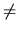

In a certain town there are n intersections connected by two- and one-way streets. The town is very
modern so a lot of streets run through tunnels or viaducts. Of course it is possible to travel between any
two intersections in both ways, i.e. it is possible to travel from an intersection a to an intersection b as
well as from b to a without violating traffic rules. Because one-way streets are safer, it has been decided
to create as much one-way traffic as possible. In order not to make too much confusion it has also been
decided that the direction of traffic in already existing one-way streets should not be changed.
Your job is to create a new traffic system in the town. You have to determine the direction of traffic
for as many two-way streets as possible and make sure that it is still possible to travel both ways between
any two intersections.
Write a program that:
- reads a description of the street system in the town from the standard input,
- for each two-way street determines one direction of traffic or decides that the street must remain
two-way,
- writes the answer to the standard output.
The first line of the input contains two integers n and m, where
2 n2000 and
n - 1mn(n - 1)/2.
Integer n is the number of intersections in the town and integer m is the number of streets.
n2000 and
n - 1mn(n - 1)/2.
Integer n is the number of intersections in the town and integer m is the number of streets.
Each of the next m lines contains three integers a, b and c, where
1an,
1bn, ab and
c belongs to {1, 2}. If c = 1 then intersections a and b are connected by an one-way street from a to
b. If c = 2 then intersections a and b are connected by a two-way street. There is at most one street
connecting any two intersections.
The output contains exactly the same number of lines as the number of two-way streets in the input.
For each such street (in any order) the program should write three integers a, b and c meaning, the new
direction of the street from a to b (c = 1) or that the street connecting a and b remains two-way (c = 2).
If there are more than one solution with maximal number of one-way streets then your program should
output any of them but just one.
4 4
4 1 1
4 2 2
1 2 1
1 3 2
2 4 1
3 1 2